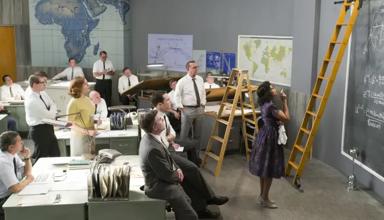
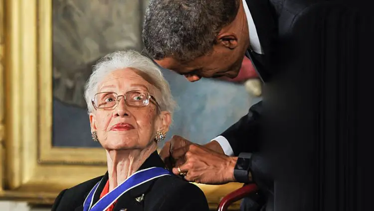

Les figures de l’ombre, ces femmes noires talentueuses à la NASA
les figures de l’ombre est un film paru en 2016. Il est l’adaptation en film du livre «Hidden Figures» qui montre des femmes calculatrices à la NASA. Le film se passe en pleine guerre froide (dans les années 60) et la conquête spatiale est un enjeu important à cette époque. Ces femmes talentueuses doivent préparer les trajectoires des fusées pour le programme Mercury et la mission Apollo. Les figures de l’ombre montre aussi les discriminations qu’elles subissent à cause de leur couleur de peau et de leur sexe puisque la majorité des ingénieurs dans la NASA sont des hommes. Quelles sont donc les discriminations de l’époque et surtout comment cela a-t-il évolué ?
Les inégalités frappantes
le film, on peut découvrir que ces femmes noires subissent des discriminations et des inégalités Ce sont des femmes, dans un domaine scientifique où les hommes sont majoritaires et on peut voir qu’elles sont discriminées en raison de leur couleur de peau qui est noire en pleine période de ségrégation aux États-Unis.
Les inégalités sont donc frappantes: on voit déjà qu’il y a des toilettes différenciées entre les femmes noirs et blanches. Mais ce n’est pas tout car même dans la vie de tout les jours, les bus, les cinémas et même les quartiers où elles habitent sont séparés des blancs.
Dans le film on remarque aussi que les femmes noires n’ont pas le droit d’accéder à un poste d’ingénieur, à la même place que les hommes. Elles ont d’avantages de travail et ne sont pas reconnues du tout par les autres employés et par la population. Elles étaient considérés comme des sous-citoyennes. Leur contribution aux missions n’ont jamais été reconnue par la NASA jusqu’à récemment.
Les évolutions constatées
Néanmoins on peut constater des évolutions durant le film. On voit que vers la fin du film, les ingénieurs commencent à s’habituer de la présence des femmes noires et sont un peu plus respectés. Le directeur de la NASA décide d’enlever les toilettes séparées entre les noirs et les blancs.
À cette époque il y a des nouvelles lois contre la ségrégation raciale aux États-Unis. En effet en 1964, le président américain Lyndon B. Johnson signe le premier texte fondateur contre les discriminations raciales aux États-Unis.
Les exploits de Katherine Johnson
Katherine Johnson, le personnage principal des figures de l’ombre, réalise des exploits durant le film. Elle possède de grandes facilités à l’école et plus en particulier envers les sciences et les mathématiques. Quand elle arrive à la NASA, ils remarquent tout de suite qu’elle a de grandes capacités pour résoudre les calculs.
L’astronaute américain John Gleen lui fait entièrement confiance avant de décoller pour l’espace. Il dit même lors du film «Si elle (Katherine Johnson) dit qu’ils sont bons (les calculs), alors je suis prêt à partir». Cela montre que malgré les discriminations et les inégalités qu’encoure cette femme, l’astronaute lui fait confiance et ne doute en aucun cas de sa capacité en tant que femme noire.
En novembre 2015, le président des États-Unis Barack Obama a remis la médaille de la liberté à Katherine Johnson.

N’hésitez pas à voir aussi

Les avancées du féminisme dans la science